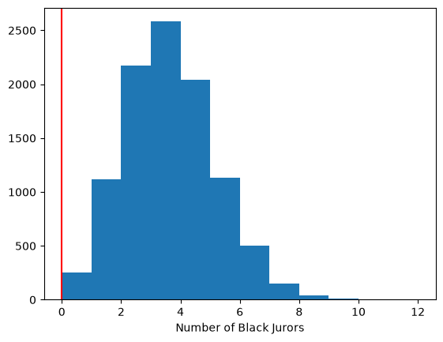

More Statistical Simulation - The Supreme Court#
This page is adapted from Brett, Rush, Adhikari, Denero and Wagner (2023). See the license page for more information
Her is a real, serious problem:
In 1963, a court in Talladega County, Alabama sentenced a young black man called Robert Swain to death 1. All 12 jurors in his trial were white. He appealed his sentence, citing, among other factors, evidence of bias in the process by which his jury was selected. At the time, only men aged 21 or older were allowed to serve on juries in Talladega County. In the county, 26% of the eligible jurors were black. (Quote from here).
A juror is someone on a jury - the group of people who decides if someone is guilty or not in a court case.
His trial jury of 12 people had no Black members.
The local population of people who could be jurors was 26% Black.
If the jury had been representative of the whole population, we would expect about 26 of 100 people to be Black. That’s around 1 in 4 (25%), so we would expect about one in four jurors to be Black - so around 3 of 12.
The Supreme Court was not convinced that there was evidence of unfairness. But, to start with the jurors - is it surprising that we expected around 3 Black jurors, but we got 0. Is the value 0 surprising, if each juror has 26% chance of being Black?
To answer this, we are going to go through a couple of steps.
The first is to build an ideal model of the world, where it is true that each juror has a 26% of being Black. We sometimes call this our ideal world. If you are used to statistical terms, this ideal model is our null hypothesis.
Then we can simulate making many juries in this ideal world.
Finally we ask whether our simulated juries, from the ideal world, often give us a count of zero Black jurors. If they don’t, then we can say that we are surprised by the value of 0, if the jury did arise from that real world.
If the value 0 is sufficiently unusual, we become suspicious that the real world is rather different from our ideal world. We consider saying that the the ideal world is NOT a good model of the real world - this is called rejecting the model of the ideal world.
The ideal world#
Our ideal model (or null hypothesis) is a world where each juror has been truly randomly selected from the eligible population. That is, for any one juror, there is a 0.26 probability that they are Black.
Simulations with the ideal model#
To do a simulation with this ideal model, we will start by making one jury, of 12 people, where it is really true that each juror has a 26% of being Black. Not to pun, but we will call one simulation of a jury of 12 - one trial.
Then we simulate 10 juries of 12 people (do 10 trials), to get warmed up.
Finally we make 10000 juries, each of 12 people, and see what we get.
# Import the array library
import numpy as np
Here we use np.random.choice() to simulate one
jury, and count the number of Black people in the simulated jury.
# Choose 12 jurors, where "Black" has probability 0.26
jurors = np.random.choice(["BLACK", "NOT_BLACK"],
p=[0.26, 0.74],
size=12)
# np.count_nonzero counts the number of 1 values:
np.count_nonzero(jurors == "BLACK")
np.int64(2)
That is one estimate, for the number of Black people we can expect, if our model is correct. Call this one trial. We can run that a few times to get a range of values. If we run it only a few times, we might be unlucky, and get some results that are not representative. It is safer to run it a huge number of times, to make sure we’ve got an idea of the variation.
To start with, we will run 10 trials.
We get ready to store the results of each estimate.
# Make an array of 10 zeros, to store the results.
counts = np.zeros(10)
We repeat the code from the cell above, but now, we store each trial result
(count) in the counts array:
jurors = np.random.choice(["BLACK", "NOT_BLACK"],
p=[0.26, 0.74],
size=12)
# np.count_nonzero counts the number of 1 values:
count = np.count_nonzero(jurors == "BLACK")
counts[0] = count
counts
array([2., 0., 0., 0., 0., 0., 0., 0., 0., 0.])
Run the cell above a few times, perhaps with Control + Enter, to see the first value in the counts array changing.
Now we collect the result of 10 trials, by using a for loop.
# Make a new counts array of zeros to store the results.
counts = np.zeros(10)
for i in np.arange(10):
# This code is the same as the cell above, but indented,
# so we run it all, for each time through the for loop.
jurors = np.random.choice(["BLACK", "NOT_BLACK"],
p=[0.26, 0.74],
size=12)
count = np.count_nonzero(jurors == 'BLACK')
# Store the result at position i
counts[i] = count
counts
array([1., 4., 4., 4., 4., 3., 4., 1., 4., 7.])
Each of these values is one estimate for how many Black jurors we should expect, if our model is right. Already we get the feeling that 0 is rather unlikely, if our model is correct. But - how unlikely?
To get a better estimate, let us do the same thing, but with 10000 juries, and therefore, 10000 estimates.
# Make a new counts array of zeros to store the results.
counts = np.zeros(10000)
for i in np.arange(10000):
# This code is the same as the cell above, but indented,
# so we run it all, for each time through the for loop.
jurors = np.random.choice(["BLACK", "NOT_BLACK"],
p=[0.26, 0.74],
size=12)
count = np.count_nonzero(jurors == 'BLACK')
# Store the result at position i
counts[i] = count
counts
array([0., 1., 2., ..., 2., 3., 4.], shape=(10000,))
If you ran this cell yourself, you will notice that it runs very fast, in much less than a second, on any reasonable computer.
We now have 10000 estimates, one for each row in the original array, and therefore, one for each simulated jury.
Remember, the function len shows us the length of the array, and therefore,
the number of values in this one-dimensional array.
len(counts)
10000
Next we want to have a look at the spread of these values. To do this, we plot a histogram. Here is how to do that, in Python. Don’t worry about the details, we will go into this more soon.
# Import `matplotlib`.
import matplotlib.pyplot as plt
Now show the histogram. This shows how many times we got each number of Black jurors, in our simulation:
# Do the histogram of our 10000 estimates.
plt.hist(counts, bins=np.arange(13))
plt.xlabel('Number of Black Jurors');
The histogram above is called the sampling distribution. The sampling distribution is the distribution of thing we are interested in (the number of Black jurors) given the ideal model, of completely random selection of jurors from a 26% Black population.
It looks as if 0 is a relatively uncommon value among our simulations. How many times did we get a value of 0, in all our 10000 estimates?
We can get an idea of this by using plt.axvline() to show our actual data on the graph from the simulation:
# Do the histogram of our 10000 estimates.
plt.hist(counts, bins=np.arange(13))
plt.xlabel('Number of Black Jurors')
plt.axvline(0, color='red');

It looks like most of the simulated trials had more than 0 black jurors…
Let’s calculate the exact number:
counts_of_0 = counts == 0
n_zeros = np.count_nonzero(counts_of_0)
n_zeros
np.int64(251)
What proportion of jury simulations give a value of 0? We just divide the number of times we see 0 by the number trials we made:
p = n_zeros / 10000
p
np.float64(0.0251)
We have run an analysis assuming that the jurors were selected at random. On that assumption, a count of 0 jurors in 12 is fairly uncommon, in the sense that the proportion of times we see that result is:
p
np.float64(0.0251)
In other words, our estimate of the probability of getting 0 Black people in a jury of 12, is
p
np.float64(0.0251)
We can convert this to a percentage (%) by multiplying it by 100:
p * 100
np.float64(2.5100000000000002)
So, we only got 0 black jurors 2.63% of the time…
What can we conclude? Only this: that in our ideal model world, where each juror has a 26% chance of being Black, 0 is uncommon. This surprising result, of 0, gives us some cause to wonder if our ideal model of the world is wrong. One way it could be wrong, is if there was bias in jury selection, so it was not true that each juror had a 26% of being Black.
Exercise - Statistical Simulation 2#
Now it’s over to you to perform your own statistical simulation…
Click here 🚀 to launch the exercise on Binder.